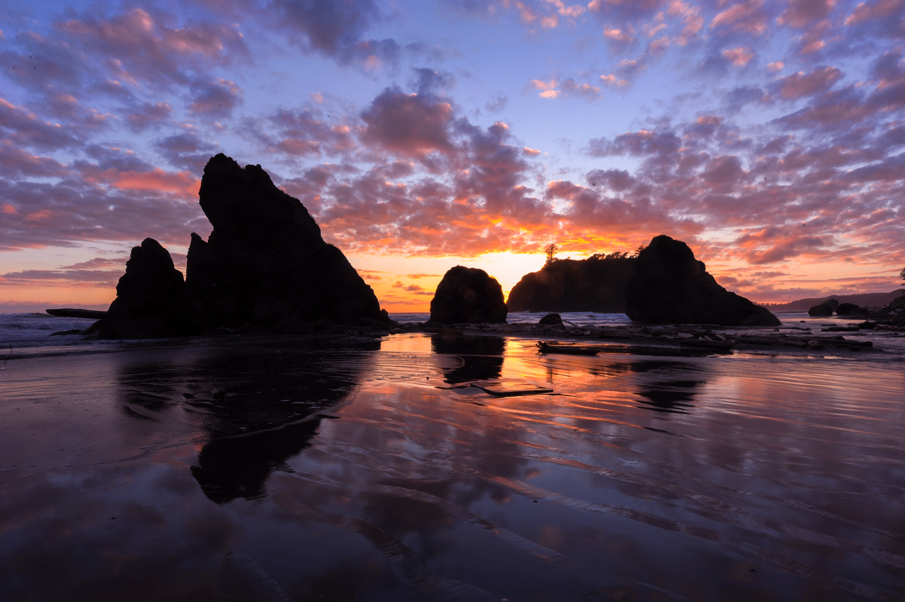

- Olympic National Park
- Mount Rainier National Park
- Mount Baker
It is about 82 miles from Seattly by ferry which is about 2 hours 30 minutes of travel time. It is a incredibly diverse park which has high alpines like Hurricane Ridge, the rugged Pacific Coast beaches, and the world-famous temperate rainforest. This national park is ideal both for hikers and non hikers.
Olympic national park is huge and you can wake up early morning for hiking and walking along the trails while enjoying beautful mountain views.
Visit this beautiful mountain laiden place which is about 103 miles away from the city, approx. 2 hours 30 minutes. It is the most popular hiking destination in the country and during summer you can also enjoy some beautiful wildflowers. In winter's it turns into a winter wonderland.
You can visit three areas of the national park - Paradise, Sunrise, and Mowich Lake. You can hike the skyline trail. You can also catch some wildlife such as mountain goats and black bears in Sunrise.

This attraction is located about 140 miles from Seattle and takes about 2 hours 30 minutes. If you don't enjoy large crowds, this place is ideal for you. This place is the best for your hiking expeditions.
Tag along with your partner or your friends to this hiking destination and even stay in a cozy cabin nearby. Go along the Yellow Aster Butte trail and enjoy the Mount Baker views from the top. Also check out the Lake Ann while you are there.